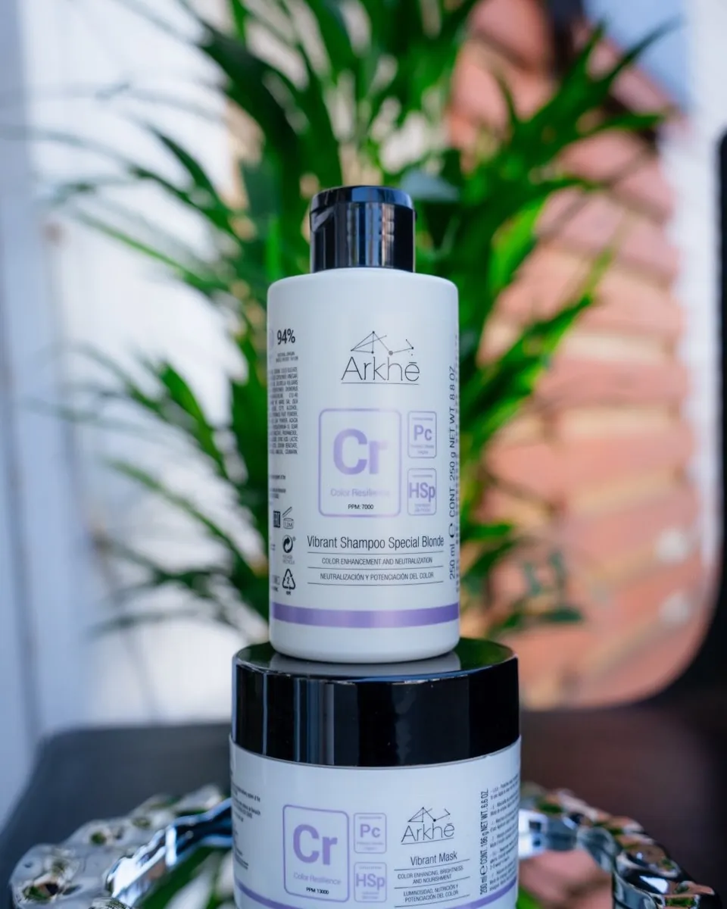
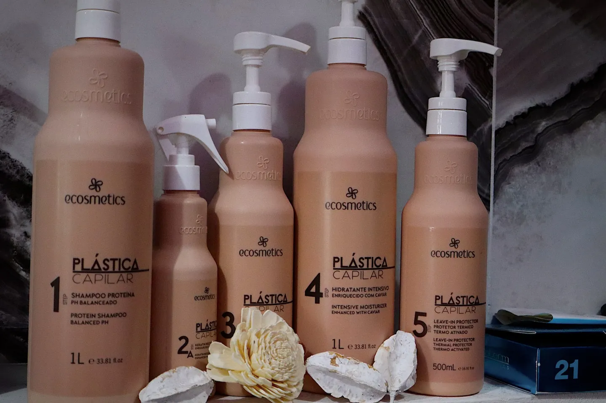
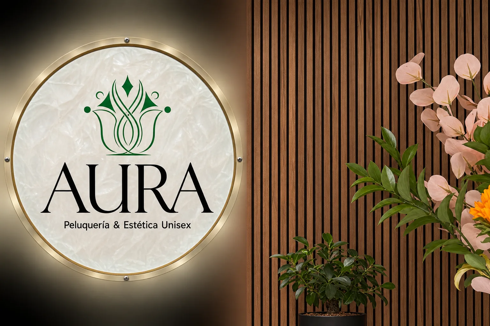

Elige según tu cuero cabelludo.
La frecuencia y el champú deben encajar con tus necesidades. Aplica el producto como indique su fabricante y aclara bien.

Cuidarte, también en casa
Tu cabello sigue contigo después de la cita. Te ayudamos a elegir una rutina coherente, sencilla y adaptada a lo que necesita.



Menos improvisar, más entender
Una rutina útil no tiene por qué ser larga. El tipo de cabello, el color y la frecuencia de lavado ayudan a elegir qué productos tienen sentido y cómo utilizarlos.
En el salón encontrarás líneas profesionales como Arkhē (por ejemplo, Full Recovery para fortalecer y nutrir), Organic Care, Olaplex o Plástica. Consulta al equipo la gama disponible y el producto concreto recomendado para tu caso: la composición y las propiedades varían entre fórmulas.
No todas las líneas ni todos los productos tienen las mismas características de origen natural. Puedes pedir información sobre ingredientes, indicaciones y modo de uso antes de comprar.
Tu rutina, con intención
La frecuencia y el champú deben encajar con tus necesidades. Aplica el producto como indique su fabricante y aclara bien.
Pregunta qué cuidado utilizar y cuánto tiempo dejarlo actuar. Más cantidad no siempre significa un mejor resultado.
Te orientamos sobre el uso de calor y el producto de protección adecuado. Evita concentrar calor de forma innecesaria.
Si notas que la rutina deja de funcionar o has cambiado de color, coméntalo. Una recomendación puede necesitar ajustes.


El cuidado después de una coloración, un trabajo de rubio o una keratina debe seguir las instrucciones del servicio realizado. Pregunta antes de utilizar productos con pigmento o tratamientos intensivos por tu cuenta.
El equipo puede indicarte cómo espaciar las revisiones y qué señales conviene observar. Trae a tu cita el nombre de los productos que usas: entender tu rutina nos ayuda a orientarte mejor.
Conocer el cuidado del colorSin dudas, sin prisas
Si hay algo más que quieras saber, estamos al otro lado.
Consulta al equipo las líneas y referencias disponibles. Te orientarán sobre precio, uso y disponibilidad; esta web no procesa compras.
Revisa la información del producto concreto. El porcentaje y las certificaciones, si existen, deben corresponder a esa fórmula; no se pueden extender a una marca completa.
Depende de tu cabello y del producto. Sigue la recomendación personalizada y el modo de empleo del fabricante.
Sí. Cuéntanos qué servicio te has realizado y qué te preocupa de tu rutina. El equipo te dirá si necesita ver tu cabello para orientarte.

Hay un momento que es solo tuyo
Cuéntanos qué necesitas. Nosotras ponemos el tiempo, las manos y el cuidado.